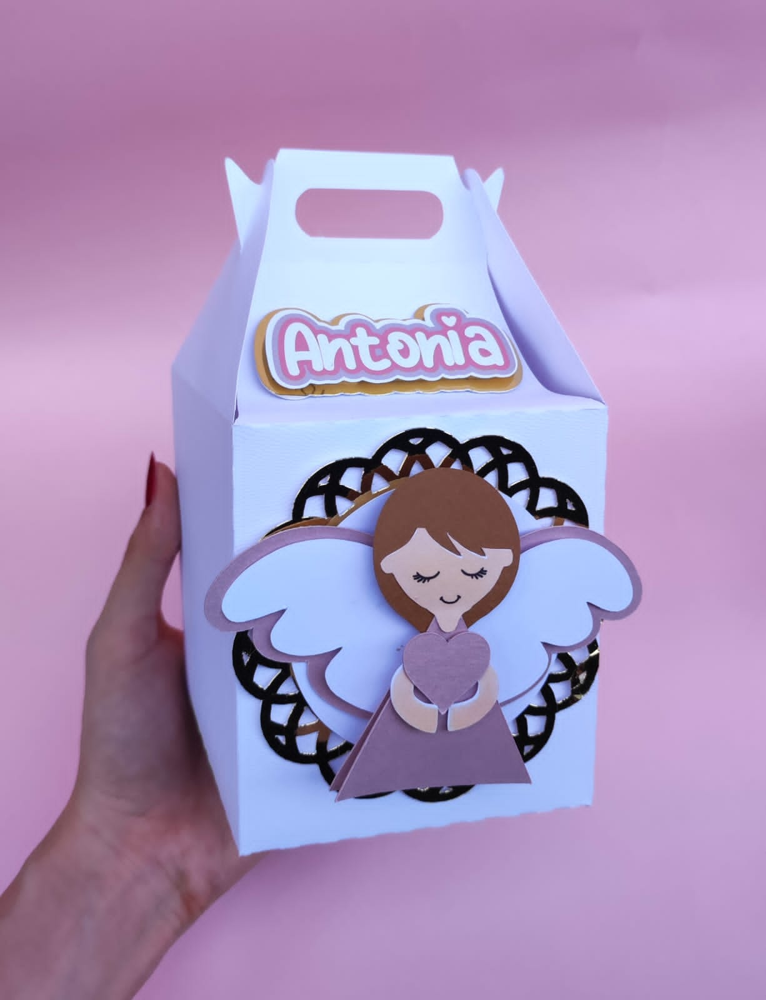
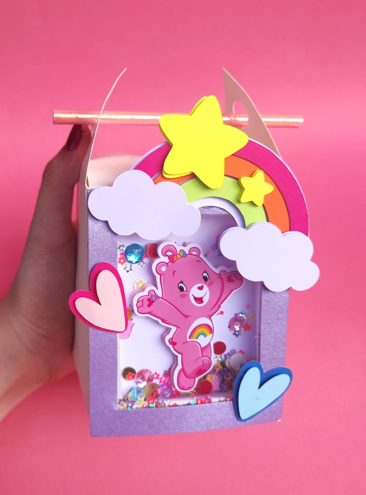
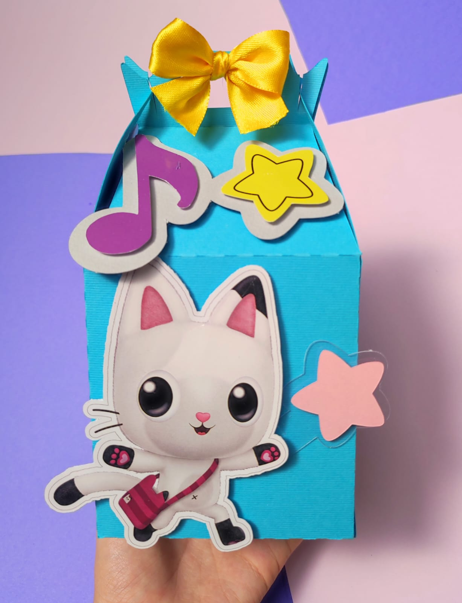

Cajitas



nuestras cajitas para fiestas son elaboradas con una dedicación y cariño excepcionales. Cada detalle es cuidadosamente diseñado y hecho a mano para asegurar que cada caja no solo sea funcional, sino también una pieza especial que realce la celebración. Creemos que cada fiesta merece un toque único, y es por eso que ponemos todo nuestro esmero en cada cajita.